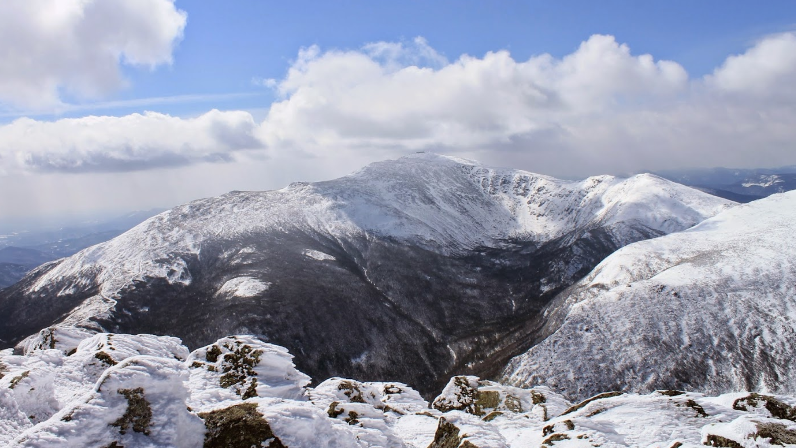
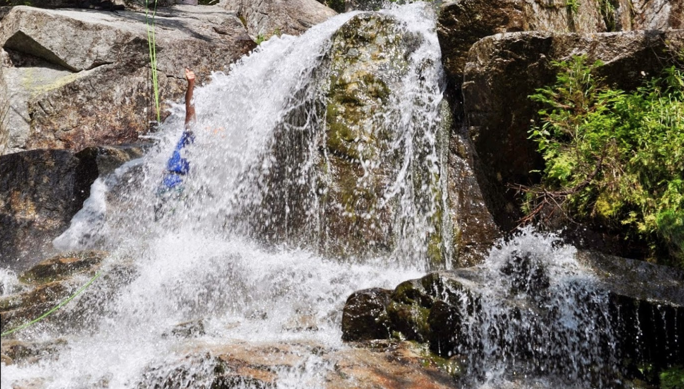
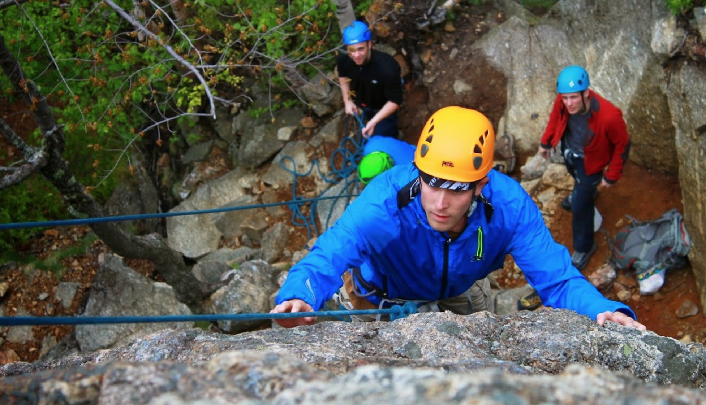
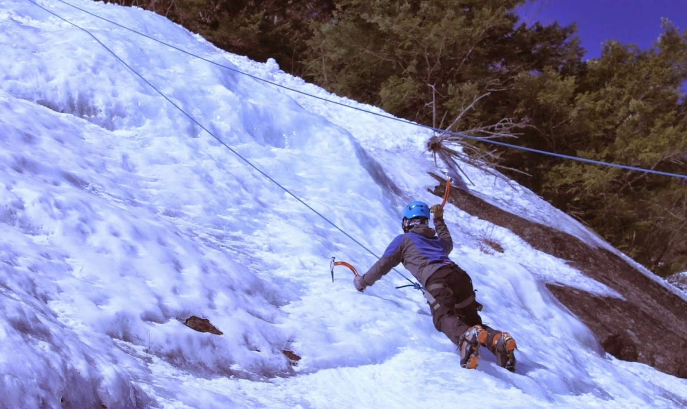

Welcome to North Ridge Mountain, NH
This course covers the basics of rock climbing including belaying, climbing knots, rappelling, and basic rock climbing movement. We will meetat our scheduled time and location, fill out our liability waivers, and then get geared up for the day. Dependent on our location, we then have a 10 minute hike through the forest, or a short drive from our White Mountain basecamp. Then we will arrive at our climbing spot for the day, where we will set-up our anchors and begin climbing. Climbs can vary in difficulty from 5.4 all the way to 5.13b, so there will be something to climb for all ability levels. This course is approximately 5 hours. BOOK NOW
   